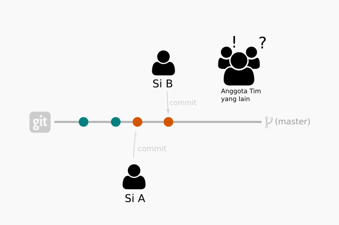

Konflik terjadi bila ada perubahan pada file di dalam repositori oleh 2 orang atau lebih secara bersamaan
Bayangkan anda sedang bekerja dengan tim pada suatu repositori Git. Repositori ini dikerjakan secara bersama-sama.
Kadang… akan terjadi konflik, karena kode yang kita tulis berbeda dengan yang lain.
Misalnya, Si A menulis kode untuk fitur X dengan algoritma yang ia ketahui. Sedangkan si B menulis dengan algoritma yang berbeda.
Lalu mereka melakukan commit, dan kode sumber jadi berantakan. Anggota tim yang lain menjadi pusing.
